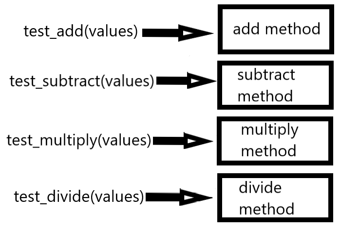
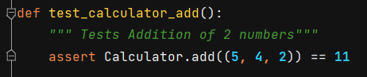

What is Unit Testing?
Unit Testing is a way of testing each part (unit) of the program for proper functionality. Python has a module in its standard library called unittest that contains tools for testing your code.
To implement unit testing, you put "test" methods in your project to call and test the "real" methods in your code.
The AAA pattern is one way of implementing unit testing.
On the Calculator project we have test methods for each of the calculator methods that pass a preset list of values, and then test that the results are correct.

Image by Bob Schicke
This is an example of a test method which tests the add method:

This is a link to the calculator_test.py file, which contains the test_calculator_add method.
What is AAA Pattern?
AAA stands for Arrange, Act and Assert.
Arrange means to setup the test by creating objects, assigning data to variables, signing into websites or databases, etc.
Act means to execute the test which can involve calling methods, passing data or interacting with a website.
Assert means to check that the method under test performed the operations correctly.
Let's see a simple example:
# This is a function that adds 2 numbers
def add(val1, val2):
return val1+ val2
# This is our test function
def test_add():
#Arrange
value1 = 5
value2 = 6
#Act
result = add(value1, value2)
#Assert
assert result == 11